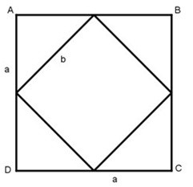

Aufgabe 226 Verbindet man die Seitenmitten eines Quadrates miteinander, so entsteht ein neues Quadrat. Wie groß ist das 10te so entstehende Quadrat, wenn das ursprüngliche 3 dm2 groß ist?

Ursprüngliche Fläche a * a = a2 Pythagoras: a a a2 a2 2 * a2 b2 = (---)2 + (---)2 = ---- + ---- = ------- | √ 2 2 4 4 4 a b = --- * √2 2 Neue Fläche: a a a2 a2 --- * √2 * --- * √2 = ---- * 2 = ---- = 2 2 4 2 = halbe ursprüngliche Fläche Abnahmefaktor q = 0,5 A10 = A0 * q10 A10 = 3 dm2 * 0,510 = 0,0029 dm2 = 0,29 cm2